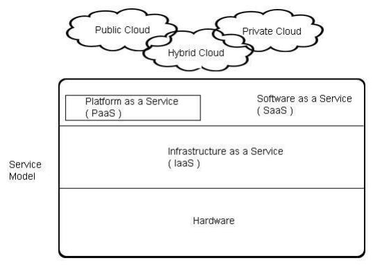

Cloud computing memiliki beberapa layanan seperti pada gambar dibawah ini

Layanan Cloud Computing
Cloud computing memberikan banyak keuntungan yang secara umum yaitu dapat ditingkatkan skala pengembangan, dapat dihandalkan, dan keamanan.
Sedangkan bagi pengguna memberikan kemudahan dan keuntungan dalam menekan biaya baik dari sisi IT maupun dari sisi operasional.
Sedangkan bagi provider memberikan kemudahan bagi pengelolaan, menekan biaya dalam maintenance layanan,
memberikan kemudahan dalam melakukan diffrensiasi produk dengan penggunaan SLA,optimasi resource, harga produk atau service yang dijual lebih terjangkau.
Karena setiap layanan yang terdapat pada cloud terkait dengan pelayanan public dan bisnis serta teknologi informasi yang menjadi peranan utama ( IT ),
maka organisasi ICT ( information and communication technologies ) membuat standarisasi yang mengatur pelayanan cloud computing yaitu ITILV3 dan ISO/IEC20000: 2005.
Menjelaskan beberapa tolak ukur yang digunakan untuk menilai setiap layanan yang diberikan oleh provider cloud berdasarkan ITILV3 dan ISO/IEC20000 : 2005.
| Konfigurasi manajemen database(CMDB) | Pengukuran dilakukan dari system database yaitu : Tipe dari database, aplikasi penunjang untuk dapat memodifikasi data dalam database, backup database, relasi atar database tersebut, integrasi database dengan tipe database lain dan mendapatkan bantuan teknis dalam melakukan konfigurasi database. |
| Service level management | Pengukuran dilakukan dari secara implisit terhadap setiap level dari layanan yang diberikan oleh provider dan pengukuran dimulai dari SLA( Service Level Agreement) yang diberikan oleh provider service cloud. |
| Service continutity dan availability management | Pengukuran dilakukan dari kemudahan dan fleksiblenya layanan yang diberikan oleh provider, baik dari sisi upgrade atau downgrade layanan, dan seberapa lama layanan tersebut sudah dipublikasi dan dijual kepasaran. |
| Resolution process | Pengukuran dilakukan dari kemampuan team manajemen provider dalam menangani berbagai proses seperti indicents ( bencana ), problem technical ( masalah teknis ) dan tanggapan atas permintaan tertentu atau perubahan tertentu. |
| Service reporting | Pengukuran dilakukan dari kemampuan provider dalam menyediakan laporan baik terhadap layanan yang digunakan, laporan historical layanan tersebut digunakan, laporan waktu penggunaan layanan yang dibeli. |
| Capacity management | Pengukuran dilakukan atas performance provider baik dari sisi teknis maupun sisi manajemen. Pengukuran ini menghasilkan nilai kemampuan provider dalam memenuhi setiap kebutuhan konsumennya. |
| Information security management | Pengukuran dilakukan dari sisi keamanan sistem, jaringan atau network yang tersedia, dan sisi keamanan infrastruktur yang dimiliki oleh provider. Bahkan pengukuran ini dilakukan dari sisi teknologi keamanan data yang dimiliki oleh provider. |
| Business relationship management | Pengukuran diukur dari beberapa faktor bisnis yang akhirnya akan memberikan hasil kemampuan provider dalam menfasilitasi dan menyediakan solusi bagi bisnis. |
Dari beberapa pengukuran seperti yang dijelaskan pada tabel diatas maka dapat dikelompokkan dalam beberapa kategori yang dapat diukur:
Dari semua faktor pengukuran yang telah diuraikan dan mengacu kepada ITIL V3 dan ISO/IEC 20000:2005,beberapa provider memberikan jasa penilaian terhadap layanan dari provider cloud yang lain.
Kesimpulan dari management service process ( MSP) : provider cloud tertentu atau consultant cloud memberikan jasa penilaian terhadap layanan cloud computing yang tersedia di pasaran yang nantinya
diselaraskan dengan kebutuhan dan keinginan pengguna atau bisnis, sehingga dengan jasa dari consultant cloud ini akan didapatkan hasil layanan cloud terbaik yang cocok untuk diimplementasikan
dan mendukung kinerja dan produktifitas bisnis. Penilaian yang diberikan oleh consultant cloud tentunya mengacu dan berorientasi kepada acuandari ITILV3dan ISO/IEC20000:2005.